Обзор
В этом документе объясняются основные шаги по настройке и отладке BSpaces в Character Tool. Он не касается какого-либо игрового кода или конкретных вещей AI или CryMannequin.
Визуализация BSspaces
Лучший способ понять, как работают BSpaces внутри, — это запустить простой 2D-BSpaces, визуализировать его в Character Tool и поиграться с различными параметрами отладки.
- Запустите Character Tool и загрузите модель.
- Выберите «2D-BSpace_MoveTurn» из списка анимации. Персонаж должен начать бежать вперед.
- Если персонаж бегает на месте, убедитесь, что установлен флажок «Управление анимацией».
- Как только персонажи начнут двигаться, перейдите к «Blend Space Control» и используйте первые ползунки, чтобы изменить скорость и кривизну.
- Перейти к DebugOptions в Character Tool (правый/нижний угол) и активируйте InPlaceMovement. Это вернет базовый символ в исходное положение. (Это необходимо, потому что для отладки мы визуализируем blend-space и базовый персонаж в одном и том же окне просмотра, а камера прикреплена к базовому персонажу)
- Далее заходим в консоль и вводим ca_DrawVEGInfo 3.5
- С помощью мыши и WASD переместите камеру назад от начала координат. Слева вы можете увидеть сетку для BSpace, а справа — смешанный символ. Чтобы упростить вывод отладки, может помочь отключить сетку серого цвета (ShowGrid), или мировая система координат (ShowBase), или желтый локатор локомоций (ShowLocator) Вы найдете оба флажка в DebugOptions в Character Tool (правый/нижний угол).
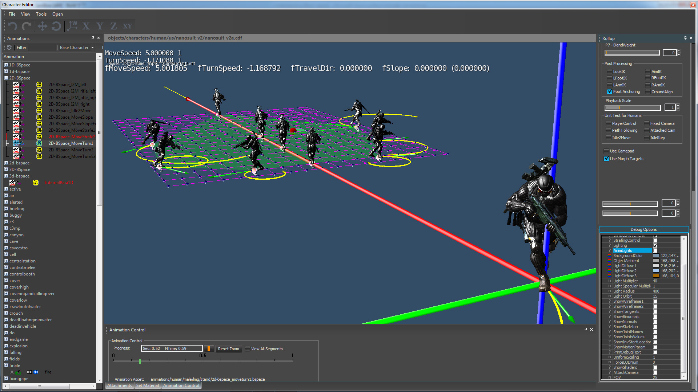
Параметры отладки ca_DrawVEGInfo
В SDK 3.5 мы немного улучшили параметры CVar для улучшения результатов отладки. CVar принимает значение float в формате ca_DrawVEGInfo 2.344455. По умолчанию это ca_DrawVEGInfo 0.0, что означает, что отладка отключена.
дробный часть (значение справа от запятой) представляет собой масштабирование примеров моделей в BSpace. Если вы используете только ca_DrawVEGInfo 0,5, то он рисует только символы размером 0,5 от исходного размера.
Если вы используете какое-либо значение между 0.001 и 0.9999, вы увидите на экране следующую информацию:
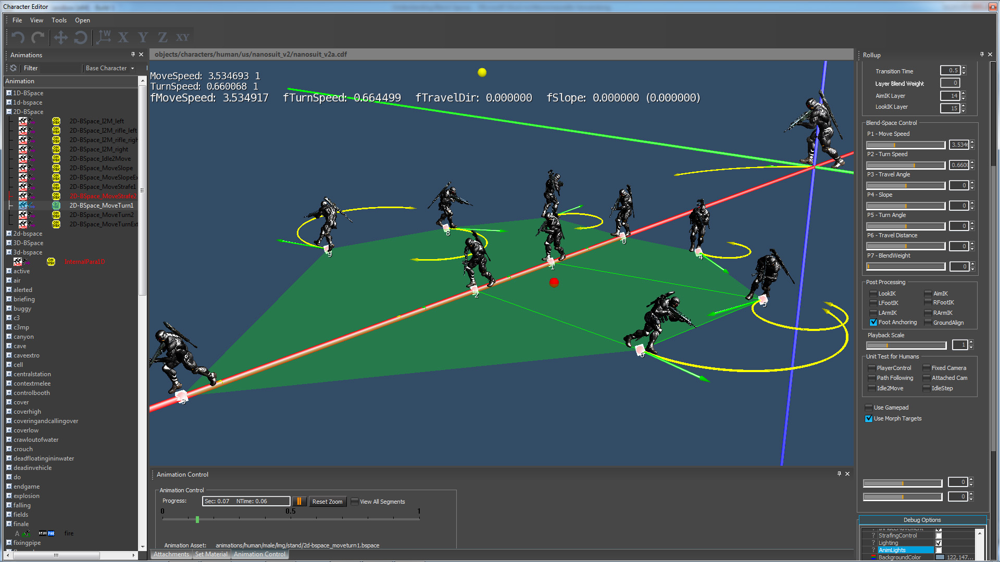
а) Все анимационные файлы доступны на BSpace (в виде мини-версии модели персонажа).
б) Каждая модель имеет либо белый или красный вращающийся куб в корневом суставе.
- А белый куб представляет собой настоящий анимационный актив (это файл CAF на диске)
- А красный куб представляет собой экстраполированный псевдопример (подробнее об этом позже)
- А зеленый куб (нет на картинке) представляет собой псевдопример воспроизведения с масштабированием (подробнее об этом позже).
в) Каждый куб имеет индекс. Это порядок появления анимационных клипов в BSpace-xml, включая все псевдопримеры.
<ExampleList>
<Example AName="stand_tac_walk_rifle_fwd_slow_3p_01" />
<Example AName="stand_tac_run_rifle_fwd_slow_3p_01" />
<Example AName="stand_tac_run_rifle_fwd_fast_3p_01" />
<Example AName="stand_tac_sprint_rifle_fwd_3p_01" />
<Example AName="stand_tac_walkTurn_rifle_lft_slow_3p_01" />
<Example AName="stand_tac_runTurn_rifle_lft_slow_3p_01" />
<Example AName="stand_tac_runTurn_rifle_lft_fast_3p_01" />
<Example AName="stand_tac_walkTurn_rifle_rgt_slow_3p_01" />
<Example AName="stand_tac_runTurn_rifle_rgt_slow_3p_01" />
<Example AName="stand_tac_runTurn_rifle_rgt_fast_3p_01" />
</ExampleList>
<ExamplePseudo>
<Pseudo p0="1" p1="0" w0="-1.0" w1="2.0" />
<Pseudo p0="0" p1="4" w0="-3.2" w1="4.2" />
<Pseudo p0="0" p1="7" w0="-3.0" w1="4.0" />
<Pseudo p0="1" p1="5" w0="-1.0" w1="2.0" />
<Pseudo p0="1" p1="8" w0="-1.5" w1="2.5" />
<Pseudo p0="2" p1="6" w0="-1.5" w1="2.5" />
<Pseudo p0="2" p1="9" w0="-1.5" w1="2.5" />
<Pseudo p0="2" p1="3" w0="-2.0" w1="3.0" />
</ExamplePseudo> г) Существует также зеленый каркасный кват. Это показывает, какие активы в настоящее время включены в смесь. В 2D BSpace у нас есть либо треугольники (смешение между 3 активами), либо четверти (смешение между 4 активами).
д) Внутри треугольника или четырехугольника всегда находится красный мигающий курсор. Вы можете управлять этим с помощью ползунков пространства наложения в Character Tool и в любой момент увидеть, какие ресурсы вносят вклад в окончательное наложение.
Числа перед запятой теперь интерпретируются как битовые поля.
Бит 1:
Если установлено, отображаются только розовые линии сетки пространства смешивания (т. ca_DrawVEGInfo 1.5). Для 1D-BSpace это простой отрезок. Для 2D-BSpace это плоскость. Для 3D-пространства это куб.
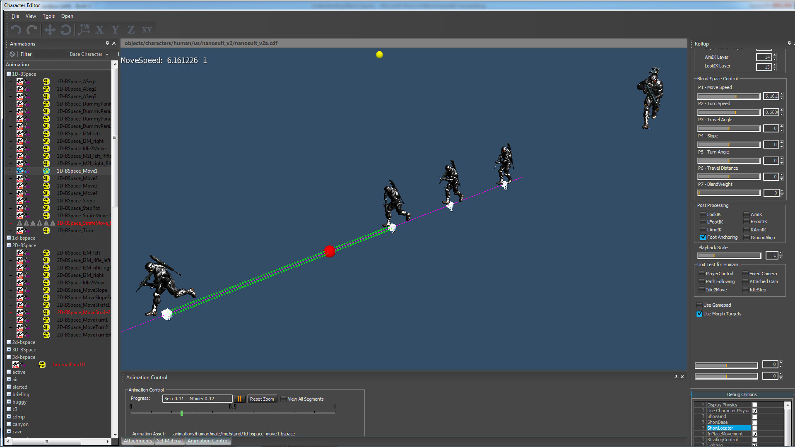 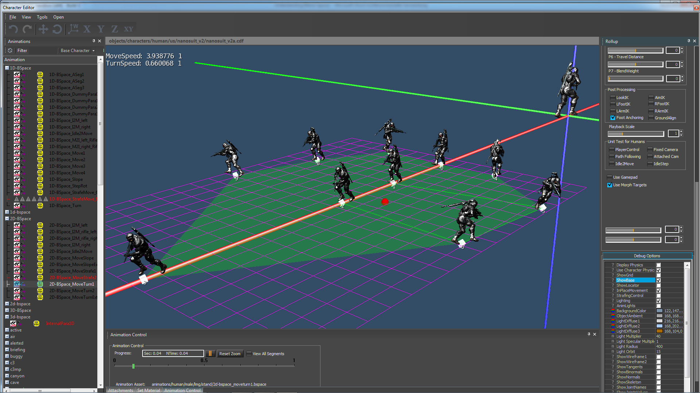 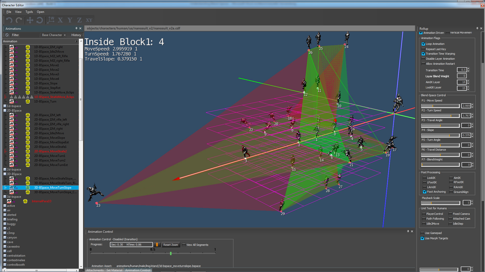
Объем пространств смешивания (=сетка) определяется в файле XML. Эти значения представляют максимальный диапазон движения. В случае с "MoveSpeed" это означает, что мы можем двигаться со скоростью от 0,2 м/сек до 9,5 м/сек.
Если код AI передает значения за пределами этого диапазона, они автоматически фиксируются к этим значениям. Это также означает, что нам необходимо доказать активы, чтобы охватить все определенные пространства смешивания.
<Dimensions>
<Param name="MoveSpeed" min="+0.2" max="+9.5" cells="7"/>
<Param name="TurnSpeed" min="-3.8" max="+3.8" cells="7"/>
</Dimensions> Бит 2: Визуализируйте виртуальные примеры (маленькие синие кубики)
В приведенном выше примере XML минимальные/максимальные значения — это диапазон пространства смешивания, а ячейки — это плотность сетки. Мы отображаем простую регулярную сетку на диапазон пространства смешивания, а затем обрабатываем этот 2D- или 3D-массив и вычисляем virtual-примеры.
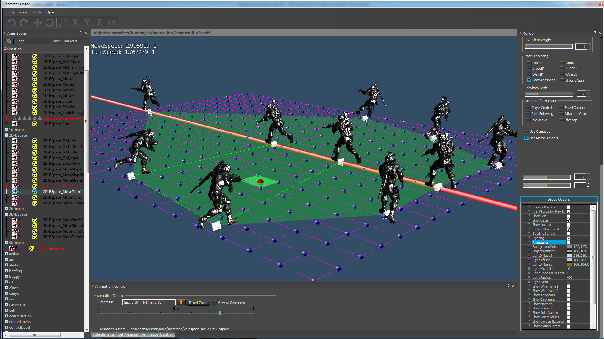
Эти примеры virtual представляют собой оптимизацию во время выполнения: во время выполнения мы перемещаем курсор через это пространство и для каждой новой позиции курсора. (=функции движения по осям x,y,z) мы вычисляем правильные веса изгиба. Вычисление весов смешивания может оказаться сложной задачей, и если параметры движения разбросаны по всему пространству параметров, то этот шаг может стать серьезной проблемой производительности. Некоторые 2D- и 3D-пространства смешивания могут иметь очень сложные настройки, которые делают оценку во время выполнения очень непредсказуемой и медленной.
Сетки виртуальных примеров решают эту проблему с помощью простого автономного вычисления путем предварительного вычисления весов смешивания и сохранения их в обычной сетке. Этот метод по сути представляет собой отображение разрозненных данных в регулярную структуру сетки (отрезки линий, прямоугольники, кубы). Во время выполнения, когда мы перемещаем курсор через это пространство, мы проверяем, в какой ячейке сетки он находится, считываем 2, 4 или 8 заранее вычисленных весов смешивания с краев ячейки сетки и выполняем либо нормальную интерполяцию, либо билинейную интерполяцию, либо трилинейную интерполяцию. Этот метод эффективен во время выполнения, поскольку он представляет собой простой поиск и линейную интерполяцию по регулярной сетке. Время CPU для этого полностью не зависит от количества движений в пространстве наложения или сложности аннотаций.
Бит 3: Дополнительная информация об отладке.
Обычно они используют дополнительную текстовую информацию, печатаемую на экране. В основном полезен программистам для глубокой отладки.
Создание смешанных пространств
Пространства смешивания представляют собой файлы XML, которые редактируются с помощью текстового редактора. В Character Tool мы поддерживаем горячая загрузка файлов. Это означает, что вы можете изменить файл с помощью текстового редактора на диске, и система автоматически обновит его и отобразит результат. Имея небольшой опыт, очень легко создавать прототипы и проводить множество экспериментов.
Мы объясним все концепции и параметры при построении различных типов изгибных пространств. Почти все параметры в файлах XML идентичны для 1D, 2D и 3D-пространств смешивания, поэтому рекомендуется проводить эксперименты с 1D- или 2D-пространствами смешивания, поскольку так легче понять взаимодействие между ресурсами, аннотациями и различными параметрами. Не начинайте с огромного пространства для 3D-смешивания.
Пример 1: 1d-bspace_DummyPara1.bspace
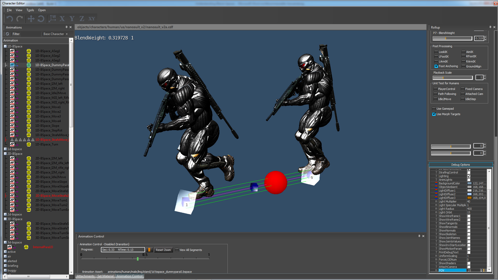
Это самое простое пространство смешивания, которое вы можете создать, без каких-либо дополнительных функций. Единственная цель — воспроизвести две анимации.
<ParaGroup>
<Dimensions>
<Param name="BlendWeight" min="0.0" max="1.0" cells="1"/>
</Dimensions>
<ExampleList>
<Example AName="stand_tac_walk_rifle_fwd_slow_3p_01" SetPara0="0.0" />
<Example AName="stand_tac_sprint_rifle_fwd_3p_01" SetPara0="1.0" />
</ExampleList>
<Blendable>
<Face p0="0" p1="1" />
</Blendable>
</ParaGroup>Вы можете начать это в Character Tool и переместить BlendWeight ползунок между [0,0f … 1,0f] для создания непрерывного сочетания ходьбы и спринта.
<Param name="BlendWeight" min="0.0" max="1.0" cells="1"/>BlendWeight — это параметр управления, а min и max — это диапазон пространства смешивания. cell="1" — количество ячеек для примеров virtual. Минимальное значение — 3. Если вы передаете меньшее значение (как в нашем примере), система ограничивает его значением 3. Подробнее об этом позже.
<Example AName="stand_tac_walk_rifle_fwd_slow_3p_01" SetPara0="0.0" />
<Example AName="stand_tac_runTurn_rifle_lft_fast_3p_01" SetPara0="1.0" />AName — это имена файлов CAF. SetPara0=? — это присвоение этому активу позиции в 1D-пространстве смешивания. Поскольку это пространство 1D-смешивания, мы размещаем оба ресурса в разных положениях по оси X. Прогулка находится в позиции 0.0, а спринт — в позиции 1.0.
<Blendable>
<Face p0="0" p1="1" />
</Blendable>Тег Face используется для аннотаций. Здесь мы сообщаем узлу смешивания, какие активы мы хотим смешать. Поскольку это очень простая настройка, единственный вариант — смешать активы 0 и 1. p0 и p1 — это индексы двух активов.
Если вы удалите этот тег из XML, система будет показывать только первые ресурсы в BSpace, и смешивание будет невозможно.
До версии CryENGINE 3.7 BSpaces также поддерживал блок MotionCombination, как описано ниже:
<MotionCombination>
<NewStyle Style="stand_tac_weaponPose_rifle_3p_01" />
</MotionCombination>MotionCombination не является обязательным и используется для частичной перезаписи определенных соединений. после смесь. В основном это функция оптимизации памяти. Аниматорам было предложено удалить все контроллеры пальцев, поскольку они занимают слишком много памяти и обычно одинаковы для всех примеров анимации (= держание пистолета).
В этом особом случае файл "stand_tac_weaponPose_rifle_3p_01« — это однокадровая поза пальца для удержания винтовки, но это также может быть полный анимационный клип (перезапись/добавление) или список ресурсов, которые все искажены во времени вместе с базовой анимацией. В какой-то момент мы перенесем эту функциональность в CryMannequin.
Пример 2: 1d-bspace_DummyPara2.bspace
Затем мы можем построить обобщенное одномерное пространство смешивания, разместив произвольное количество клипов по линейному масштабу. Этот узел смешивания выполняет лерп между двумя клипами, соседними с входным значением.
<ParaGroup>
<Dimensions>
<Param name="BlendWeight" min="0.0" max="1.0" cells="29" scale="3.4" />
</Dimensions>
<ExampleList>
<Example AName="stand_tac_walk_rifle_fwd_slow_3p_01" SetPara0="0.0" />
<Example AName="stand_tac_run_rifle_fwd_slow_3p_01" SetPara0="0.3333" />
<Example AName="stand_tac_run_rifle_fwd_fast_3p_01" SetPara0="0.6666" />
<Example AName="stand_tac_sprint_rifle_fwd_3p_01" SetPara0="1.0" />
</ExampleList>
<Blendable>
<Face p0="0" p1="1" />
<Face p0="1" p1="2" />
<Face p0="2" p1="3" />
</Blendable>
</ParaGroup> В этом примере создается непрерывное смешение всех четырех ресурсов в пространстве при перемещении BlendWeight слайдер. Также обратите внимание, что все 4 актива в пространстве смешивания искаженный временем когда вы меняете ползунок. Без этой функции вы бы получили скольжение ног, перекрещивание ног и другие забавные вещи. Для деформации времени мы выравниваем несколько движений, используя один счетчик анимации, и масштабируем дельту-время относительно весов смешивания.
Представьте, что это два движения в пространстве смешивания: прогулка и спринт. Если "спринт" имеет более высокий приоритет, чем "ходить" больше похоже на яркую анимацию Чарли Чаплина. Если "ходить" имеет более высокий приоритет, чем "спринт"анимируется в замедленном режиме. Такое масштабирование времени мы делаем со всеми движениями в пространстве смешивания.
Искажение времени — простая и мощная функция. Лучше всего он работает для движений с одинаковыми функциями, но разным количеством ключевых кадров. (т.е. он идеально подходит для локомоции-активы). В нашем случае нам нужно было убедиться, что все активы начинаются с левой ноги на земле.
<Dimensions>
<Param name="BlendWeight" min="0.0" max="1.0" cells="29" scale="3.4" />
</Dimensions> Тег масштаба не является обязательным. Это только для отладки в Character Tool. В этом случае все 4 ресурса будут располагаться очень близко друг к другу и практически отображаться друг на друге. С помощью этого параметра мы масштабируем положение по оси X. Это абсолютно не влияет на само смешивание.
<Blendable>
<Face p0="0" p1="1" />
<Face p0="1" p1="2" />
<Face p0="2" p1="3" />
</Blendable> Все ресурсы в списке примеров должны быть аннотированы для смешивания. Ресурсы, которые не аннотированы в <Blendable>, не будут участвовать в смешивании. Здесь у нас есть 4 актива, и нам нужно явно указать системе, как мы хотим их смешать на основе входного значения. Поскольку все ресурсы располагаются на одной линии, нам нужно только отрезки линий для аннотаций. Для бленд-пространства с 4 активами необходимы 3 линейных сегмента.
Пример 3: 1d-bspace_DummyPara3.bspace
Чтобы получить извлечение движения, нам нужно добавить эти параметры, потому что BlendWeight не говорит об этом напрямую.
<AdditionalExtraction>
<Param name="MoveSpeed" />
<Param name="TravelAngle" />
<Param name="TurnSpeed" />
<Param name="TravelSlope" />
</AdditionalExtraction>Если мы добавим эти параметры к предыдущему BSpace, персонажи будут использовать движение локатора для перемещения по миру. (в этом особом случае «MoveSpeed» будет достаточно, потому что активы имеют только движение вперед). Также убедитесь»Анимация"активируется и "InPlaceMovement" деактивировано. Скорость перемещения можно снова контролировать с помощью ползунка BlendWeight. Если активы чистые (у нас есть специальные правила для создания активов передвижения) вы можете переключаться между различными скоростями движения, не скользя ногами. Это почти все, что касается простого смешивания анимации с помощью пространств смешивания.
Пример 4: 1d-bspace_Move1.bspace
А теперь мы переходим к основной теме пространств смешивания: параметрическому смешиванию. Это по-прежнему простой бинарный lerp, но мы говорим системе: извлечь параметры прямо из движений. Параметр «MoveSpeed» сообщает системе, что необходимо извлечь скорость перемещения из корневого движения и автоматически вставить ее в пространство смешивания. В результате получается пространство смешивания, в котором все ресурсы имеют разные позиции по оси X. Эти положения мы называем «естественными» параметрами движения, поскольку они непосредственно зависят от движения. В данном случае пространство смешивания представляет собой эти реальные параметры движения, чего не происходит при использовании SetPara0="?" как мы делали раньше.
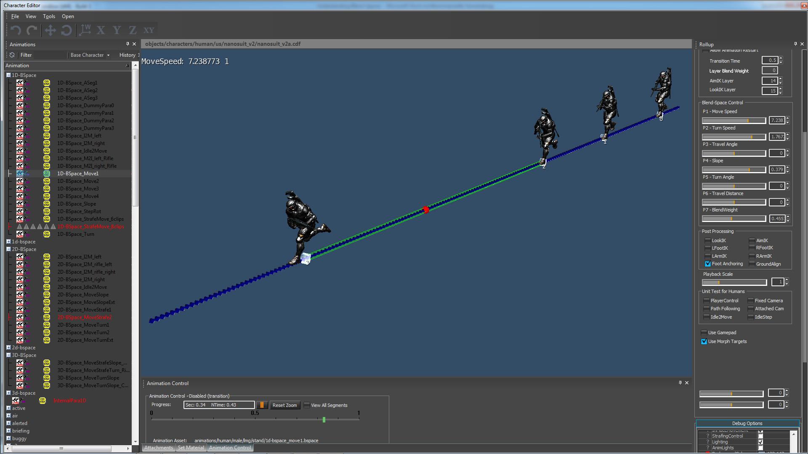
<ParaGroup>
<Dimensions>
<Param name="MoveSpeed" min="0.2" max="+10.0" cells="19" />
</Dimensions>
<ExampleList>
<Example AName="stand_tac_walk_rifle_fwd_slow_3p_01" />
<Example AName="stand_tac_run_rifle_fwd_slow_3p_01" />
<Example AName="stand_tac_run_rifle_fwd_fast_3p_01" />
<Example AName="stand_tac_sprint_rifle_fwd_3p_01" />
</ExampleList>
<Blendable>
<Face p0="0" p1="1" />
<Face p0="1" p1="2" />
<Face p0="2" p1="3" />
</Blendable>
</ParaGroup> Даже в случае автоматического извлечения важно, чтобы все примеры в списке отсортированы по размеру начиная с наименьшего параметра. Все параметры должны быть в порядке возрастания, иначе система остановится с ошибкой. Ниже вы можете найти пример, который остановит систему, поскольку самый медленный актив (прогулка) находится в конце. Прежде чем делать аннотацию, важно оценить все ресурсы.
<ExampleList>
<Example AName="stand_tac_run_rifle_fwd_slow_3p_01" />
<Example AName="stand_tac_run_rifle_fwd_fast_3p_01" />
<Example AName="stand_tac_sprint_rifle_fwd_3p_01" />
<Example AName="stand_tac_walk_rifle_fwd_slow_3p_01" /> //bad
</ExampleList>Если пространство смешивания правильное, мы можем использовать ползунок MoveSpeed для перемещения курсора между ресурсами и создания непрерывного перехода между всеми четырьмя ресурсами. Большая разница между простое смешивание и параметрическое смешивание заключается в том, что мы можем установить желаемую скорость движения непосредственно с помощью ползунка (т.е. бежать со скоростью 6,5м/сек) и система автоматически смешивает правильные ресурсы для создания желаемой скорости движения. Для программистов AI это более интуитивно понятно, чем установка параметра дерева смешивания [0...1].
Этот BSpace — особый случай, когда вам нужен SDK 3.5.2, который поддерживает автоматическую экстраполяцию для 1D-пространств смешивания. В предыдущей версии он просто переходил к первому активу, если вы переместите курсор за пределы диапазона самого быстрого/самого медленного актива. Чтобы преодолеть эту проблему, мы использовали псевдопримеры.
Пример 5: 1d-bspace_Move2.bspace
В этом примере показано, как создать псевдоактивы путем экстраполяции двух существующих активов. Псевдоактивы отображаются в виде красного куба. По сути, это процедурно генерируемые активы.
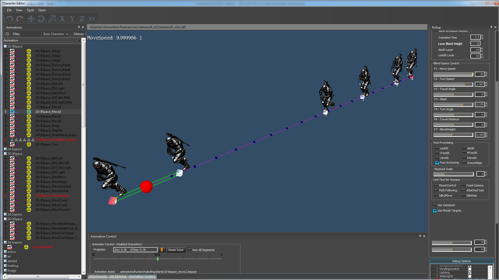
<ParaGroup>
<Dimensions>
<Param name="MoveSpeed" min="0" max="+10.0" cells="19" />
</Dimensions>
<ExampleList>
<Example AName="stand_tac_walk_rifle_fwd_slow_3p_01" />
<Example AName="stand_tac_run_rifle_fwd_slow_3p_01" />
<Example AName="stand_tac_run_rifle_fwd_fast_3p_01" />
<Example AName="stand_tac_sprint_rifle_fwd_3p_01" />
</ExampleList>
<ExamplePseudo>
<Pseudo p0="1" p1="0" w0="-0.5" w1="1.5" />
<Pseudo p0="2" p1="3" w0="-1.0" w1="2.0" />
</ExamplePseudo>
<Blendable>
<Face p0="4" p1="0" />
<Face p0="0" p1="1" />
<Face p0="1" p1="2" />
<Face p0="2" p1="3" />
<Face p0="3" p1="5" />
</Blendable>
</ParaGroup> Наше пространство смешивания почти идеально подходит для бега вперед, но есть еще небольшая проблема, которую нам нужно исправить. Пространства смешивания имеют минимальный/максимальный диапазон от 0,1ф - 10.0ф, что означает, что мы можем выбрать скорость перемещения между 0,1 м/сек. и 10,0 м/сек.. Единственная проблема заключается в том, что медленная прогулка имеет скорость 0,85 м/сек. и быстрый спринт имеет скорость 9,26 м/сек.. Эти ресурсы взяты из mocap, и мы не хотели их слишком сильно менять. Это также физический предел движений, которые может совершать человек, а это значит, что мы не можем охватить все пространство смешивания.
Всегда можно попросить аниматора создать ключевой кадр для нового актива, но, скажем, мы хотим обойтись как можно меньшим количеством движущихся клипов. С экстраполяция мы можем выбрать два реальных примера и экстраполировать их по прямой линии. Новый пример — это псевдопример. Он имеет только 2 индекса/веса, которые указывают на реальные примеры.
<ExamplePseudo>
<Pseudo p0="1" p1="0" w0="-0.5" w1="1.5" />
<Pseudo p0="2" p1="3" w0="-1.0" w1="2.0" />
</ExamplePseudo>С технической точки зрения это удивительно просто. Вам не нужно ничего менять в коде смешивания. На самом деле, это точно такая же формула смешивания, которую мы используем для интерполяции, только веса смешивания находятся за пределами диапазона [0…1]. Для экстраполяции может быть приемлемо, чтобы некоторые движения имели отрицательные значения или значения, превышающие 1,0f. Во всех случаях веса должны быть нормализованы так, чтобы их сумма всегда была равна 1,0, чтобы избежать масштабирования символа. В нашем примере мы выполняем следующую операцию для создания псевдоактива:
пе1 = -0.5*clip0 + 1.5*клип1
пе2 = -1.0*клип2 + 2.0*клип3
Разместив псевдопример в пространстве смешивания, мы можем аннотировать новый пример для смешивания и создавать анимацию даже для области за пределами существующего пространства.
<Blendable>
<Face p0="4" p1="0" /> //clip4 is a pseudo example
<Face p0="0" p1="1" />
<Face p0="1" p1="2" />
<Face p0="2" p1="3" />
<Face p0="3" p1="5" /> //clip5 is a pseudo example
</Blendable>Результатом экстраполяции может быть очень непредсказуемый. Иногда получаются удивительно интересные результаты, а иногда — просто странную извращенную позу. Невозможно заранее предсказать, приведет ли экстраполяция к хорошей или плохой анимации. Эта функция может быть очень полезна в пространствах смешивания с более высокими размерностями. С помощью «экстраполированных псевдопримеров» вы можете протестировать несколько комбинаций активов в пространстве смешивания и посмотреть, какие из них дают приемлемые результаты. Это что-то вроде контролируемая экстраполяция. Если вас не устраивает результат, то придется «залатать» blend-пространство новыми примерами. Мы не рекомендуем злоупотреблять экстраполяцией, но если вы используете ее всего пару секунд, то это совершенно нормально и помогает сэкономить много памяти.
Пример6: 1d-bspace_Move3.bspace
В этом примере показано, как создать псевдоактивы путем масштабирования скорости воспроизведения существующих ресурсов. Псевдоактивы отображаются в виде зеленого куба. Это еще один метод создания процедурно генерируемых активов.

<ParaGroup>
<Dimensions>
<Param name="MoveSpeed" min="0.1" max="+10.0" cells="19" />
</Dimensions>
<ExampleList>
<Example AName="stand_tac_walk_rifle_fwd_slow_3p_01" PlaybackScale="0.1"/>
<Example AName="stand_tac_walk_rifle_fwd_slow_3p_01" />
<Example AName="stand_tac_run_rifle_fwd_slow_3p_01" />
<Example AName="stand_tac_run_rifle_fwd_fast_3p_01" />
<Example AName="stand_tac_sprint_rifle_fwd_3p_01" />
<Example AName="stand_tac_sprint_rifle_fwd_3p_01" PlaybackScale="1.5"/>
</ExampleList>
<Blendable>
<Face p0="0" p1="1" />
<Face p0="1" p1="2" />
<Face p0="2" p1="3" />
<Face p0="3" p1="4" />
<Face p0="4" p1="5" />
</Blendable>
</ParaGroup> Этот узел смешивания использует один и тот же ресурс дважды, и из-за PlaybackScale="0,1" и PlaybackScale="1.5" мы помещаем его в две разные позиции на линии. Когда вы используете слайдер Move, вы можете генерировать параметризованную прогулку в диапазоне [0,1 … 10,0] без скольжения ног.
В чем разница между экстраполированными примерами и примерами с масштабированием воспроизведения?
Оба являются псевдопримерами, и в предыдущем случае оба метода дали визуально схожие результаты, поскольку веса смешивания или значения масштаба были довольно малы. Но это совершенно разные методы, и в некоторых случаях они дают совершенно разные результаты.
- Экстраполированные примеры представляют собой смесь между два существующих актива. С разумными весами смешивания вы можете получить красивую преувеличенную анимацию. Проблема начинается, когда вы используете веса смешивания далеко за пределами диапазона [0...1]. В таком случае могут получиться странные извращенные позы и много забавных вещей.
- Примеры масштабированного воспроизведения генерируются из один единственный актив. Если значение масштаба слишком велико, это может привести к сентиментальному движению «Чарли Чаплина» или неестественному замедленному движению.
Очевидно, что псевдоактивы никогда не смогут иметь качество реальных активов, созданных опытным аниматором, но это хорошая функция, позволяющая избежать экспоненциального взрыва ресурсов в текущей игре. В следующем примере показано пространство смешивания с одним реальным активом (скорость 4,5 м/сек) и двумя масштабированными версиями того же актива, чтобы охватить полный диапазон скоростей 3–8 м/сек без скольжения. Мы использовали этот трюк A LOT в C3 для создания «фальшивых» 2D-пространств смешивания без создания новых ресурсов. Подробнее об этом позже, когда мы рассмотрим 2D-Blend Spaces.
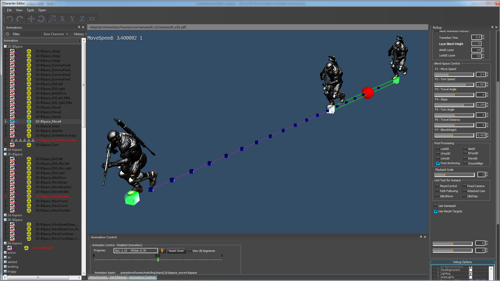
<ParaGroup>
<Dimensions>
<Param name="MoveSpeed" min="3.0" max="+8.0" cells="19" />
</Dimensions>
<ExampleList>
<Example AName="stand_tac_run_rifle_fwd_fast_3p_01" PlaybackScale="0.5" />
<Example AName="stand_tac_run_rifle_fwd_fast_3p_01" />
<Example AName="stand_tac_run_rifle_fwd_fast_3p_01" PlaybackScale="1.8" />
</ExampleList>
<Blendable>
<Face p0="0" p1="1" />
<Face p0="1" p1="2" />
</Blendable>
</ParaGroup> Еще один практический пример одномерного пространства смешивания с остальными параметрами движения:
- MoveSpeed
- TurnSpeed
- TravelAngle
- TravelSlope
- TurnAngle
- TravelDist
Все эти параметры связаны со специализированным кодом C++, который извлекает значения из корневого движения и использует их для управления пространствами смешивания. Добавление новых параметров требует изменения кода C++.
Пример7: 1D-BSpace_Turn.bspace
До сих пор у нас было только движение вперед, но его легко совместить с анимацией поворота. Все, что нам нужно, это 3 актива: бег вперед, беги-поверни направо и беги-поверни налево. Изогнутый желтый локатор указывает на анимацию поворота. Во всех случаях персонаж всегда движется в том направлении, куда указывает его тело.
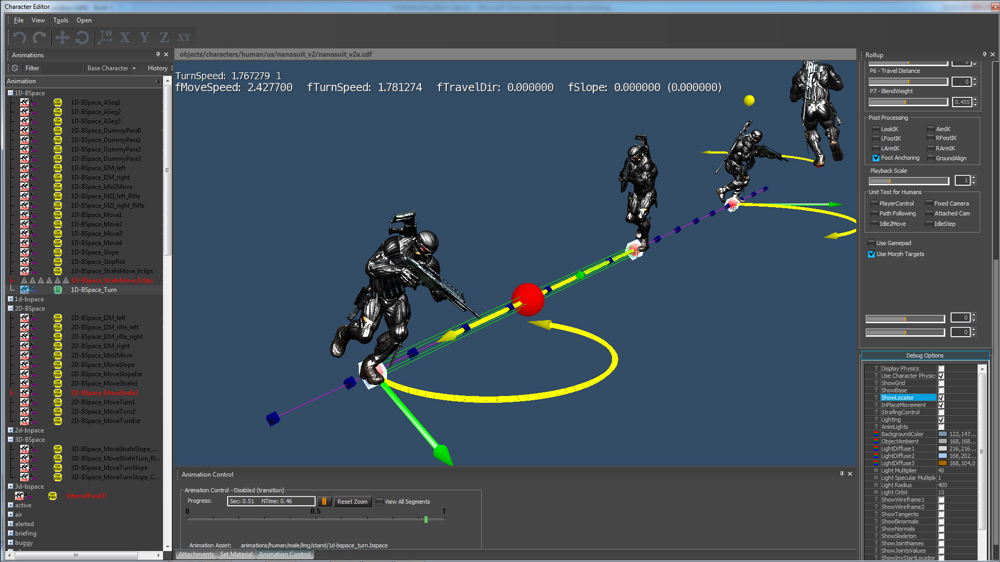
<ParaGroup>
<Dimensions>
<Param name="TurnSpeed" min="-4.0" max="+4.0" cells="17"/>
</Dimensions>
<ExampleList>
<Example AName="stand_tac_runTurn_rifle_rgt_fast_3p_01" />
<Example AName="stand_tac_run_rifle_fwd_fast_3p_01" />
<Example AName="stand_tac_runTurn_rifle_lft_fast_3p_01" />
</ExampleList>
<AdditionalExtraction>
<Param name="MoveSpeed" />
</AdditionalExtraction>
<Blendable>
<Face p0="0" p1="1" />
<Face p0="1" p1="2" />
</Blendable>
</ParaGroup> В этом XML есть одна вещь, которая не сразу бросается в глаза: теги AdditionalExtraction и Param name="MoveSpeed". Это похоже на то, что мы упоминали ранее в примере 3. Но в данном случае мы указали только «TurnSpeed» для управления, извлечения движения и дельта-движения. Система не знает, что нам нужна скорость перемещения и для дельта-движения, если мы не укажем это явно. Как только мы установим "MoveSpeed«Мы можем двигаться через слово.
С помощью ползунка смешивания "Угол перемещения"в Character Tool вы можете контролировать кривизну. Нет возможности регулировать скорость перемещения. Персонаж движется точно со скоростью, заданной в анимации. Позже мы покажем на примере 2D-пространств, как это преодолеть.
Пример8:1D-BSpace_Slope.bspace
Другой практический пример — движение вверх и вниз. Все, что нам нужно, это 3 актива: идти вперед, прогулка и спуск. Желтый локатор указывает угол наклона. Во всех случаях персонаж всегда движется в том направлении, куда указывает его тело.

<ParaGroup>
<Dimensions>
<Param name="TravelSlope" min="-0.5" max="+0.5" scale="4.4" cells="5"/>
</Dimensions>
<ExampleList>
<Example AName="stand_tac_walkDown_rifle_fwd_slow_3p_01" />
<Example AName="stand_tac_walk_rifle_fwd_slow_3p_01" />
<Example AName="stand_tac_walkUp_rifle_fwd_slow_3p_01" />
</ExampleList>
<AdditionalExtraction>
<Param name="MoveSpeed" />
</AdditionalExtraction>
<Blendable>
<Face p0="0" p1="1" />
<Face p0="1" p1="2" />
</Blendable>
</ParaGroup> С помощью ползунка смешивания "Наклон" в Character Tool вы можете контролировать угол наклона. Скорость движения не контролируется, и персонаж будет двигаться точно со скоростью, указанной в анимации. Позже мы покажем на примере 2D-пространств, как это преодолеть.
Пример9:1D-BSpace_StrafeMove_8clips.bspace
Классический пример движения для игр: обстрел-движение где персонаж сохраняет постоянное направление тела (то есть всегда с нетерпением жду), но хочет двигаться ногами вперед, в стороны или назад. Простой способ сделать это с помощью пространств смешивания — взять 4, 6 или 8 активов, которые охватывают все нужные нам направления движения, и представить каждое направление радиантом. Движение вперед всегда имеет значение 0,0. Все значения от 0,0 до -3,147 представляют собой движение вправо. Все значения от 0,0 до +3,147 представляют собой движение влево. Значения +3,147 и -3,147 представляют собой идеальное движение назад. Чтобы охватить полный круг, нам нужно пространство смешивания в диапазоне от -3,147 до +3,147. Или 2pi, если хотите.
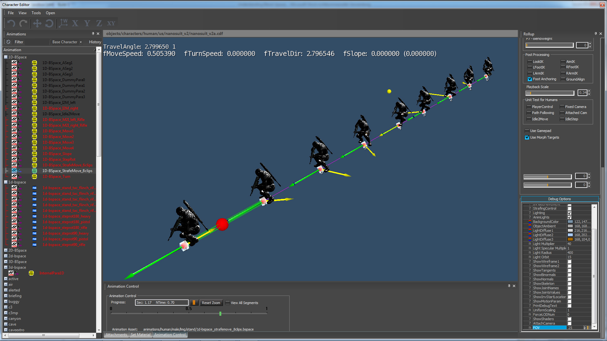
<ParaGroup>
<Dimensions>
<Param name="TravelAngle" min="-3.14" max="+3.14" cells="17" />
</Dimensions>
<ExampleList>
<Example AName="crouch_tac_walk_rifle_bwd_slow_3p_01" SetPara0="-3.147" />
<Example AName="crouch_tac_walkCross_rifle_bRgt_slow_3p_01" />
<Example AName="crouch_tac_walkStr_rifle_rgt_slow_3p_01" />
<Example AName="crouch_tac_walkCross_rifle_fRgt_slow_3p_01" />
<Example AName="crouch_tac_walk_rifle_fwd_slow_3p_01" />
<Example AName="crouch_tac_walkCross_rifle_fLft_slow_3p_01" />
<Example AName="crouch_tac_walkStr_rifle_lft_slow_3p_01" />
<Example AName="crouch_tac_walkCross_rifle_bLft_slow_3p_01" />
<Example AName="crouch_tac_walk_rifle_bwd_slow_3p_01" SetPara0="+3.147" />
</ExampleList>
<AdditionalExtraction>
<Param name="MoveSpeed" />
</AdditionalExtraction>
<Blendable>
<Face p0="0" p1="1" />
<Face p0="1" p1="2" />
<Face p0="2" p1="3" />
<Face p0="3" p1="4" />
<Face p0="4" p1="5" />
<Face p0="5" p1="6" />
<Face p0="6" p1="7" />
<Face p0="7" p1="8" />
</Blendable>
</ParaGroup> В результате выпрямляется круг, на котором были размещены клипы направленной анимации, и используется угол направления движения. θ. Параметр «TravelAngle» выполняет это извлечение автоматически. (кроме движения назад). С помощью ползунка смешивания "ПутешествияУгол" в Character Tool вы можете контролировать направление движения.
Наверное, не сразу понятно, почему SetPara0="-3,147" и SetPara0="+3,147" необходимы. Почему нам нужно устанавливать эти значения вручную? Почему мы не можем автоматически извлечь их из файла? Как упоминалось ранее, чтобы охватить полный круг, нам нужно пространство смешивания в диапазоне от -3,147 до +3,147. (или от -pi до +pi). К сожалению, художник не может создать два разных ресурса: один с перемещением -3,147, а другой с перемещением +3,147. Технически оба являются одними и теми же активами, и при автоматическом извлечении оба окажутся в одной и той же позиции в пространстве смешивания. Это незаконный случай. Единственный способ использовать его в контексте линеаризованного пространства смешивания — напрямую установить параметр и разместить один и тот же актив в разных позициях пространства. Другими словами, параметр SetParaX это еще один способ создания псевдоактивов для заполнения пространства смешивания.
Сколько ресурсов нам нужно для движения на 360 градусов?
Абсолютный минимум — 4 актива; вперед, влево, вправо, назад. Это охватит все направления, но диагональные переходы обычно выглядят не очень хорошо, потому что движения вперед и боковые движения на самом деле не подходят для смешивания. Вы всегда будете скользить ногами, скрещивать их и погружаться в землю. Вот почему рекомендуется использовать 8 активов.
Еще одна классическая проблема с обстрелом — вращение бедра. Обычно бедра направлены вправо при ударе вправо и влево при ударе влево. Это кажется более естественным для актера мокапа. Проблема в том, что быстрые стрейфы влево/вправо всегда выглядят как танец самбы. Вот почему рекомендуется сохранять ориентацию бедра static для каждого пространства смешивания, создавать новое пространство смешивания для каждого поворота бедра и воспроизводить явный переход для настройки ворот. Для такого решения вам может понадобиться 16 активов для одной скорости.
Пример9:1D-BSpace_StepRot.bspace
Еще один практический пример: IdleStep-Ротация где персонаж поворачивается на месте.
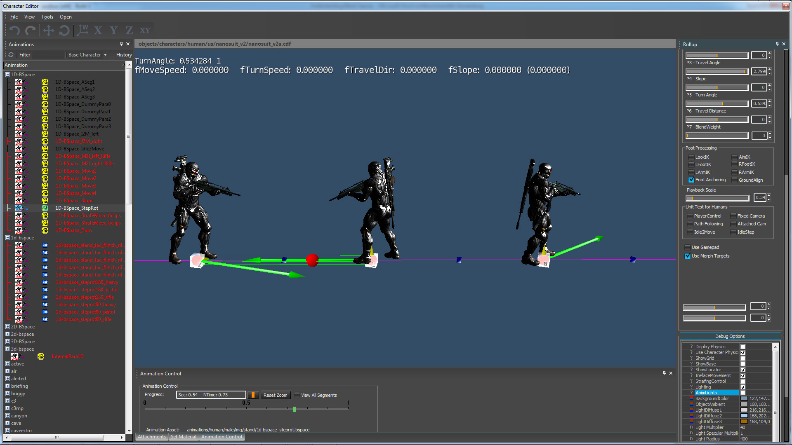
<ParaGroup>
<Dimensions>
<Param name="TurnAngle" min="-1.6" max="+1.6" cells="9" locked="1" deltaextraction="1"/>
</Dimensions>
<ExampleList>
<Example AName="stand_tac_stepRot_rifle_rgt_3p_01" />
<Example AName="stand_tac_step_rifle_idle_3p_01" />
<Example AName="stand_tac_stepRot_rifle_lft_3p_01" />
</ExampleList>
<Blendable>
<Face p0="0" p1="1" />
<Face p0="1" p1="2" />
</Blendable>
</ParaGroup> Параметр lock="1" позволяет избежать изменения параметров во время воспроизведения анимации. В большинстве blend-пространств вы можете изменить параметр в любое время и сразу увидеть результат. Но для некоторых типов смесей это не рекомендуется: Step-Rotations и Idle2Moves. Для этих пространств смешивания, когда не нужно менять параметр во время воспроизведения анимации.
Проблема более серьезна для Idle2Moves. Представьте себе, что персонаж наклоняется, чтобы начать бежать на 90 градусов влево, а пользователь внезапно решает, что хочет бежать в другом направлении. если мы сразу изменим blend-weights, анимация будет выглядеть невесомой и неправдоподобной. Если этот флаг установлен, BSpace принимает новые входные данные только тогда, когда он помещается в очередь или когда анимация достигает конца цикла и зацикливается.
Параметр deltaextraction="1" используется для извлечения движения на основе расстояния и необходим для пошаговых вращений и Idle2Moves.
Пример 10: 1D-BSpace_I2M_left.bspace
Еще один практический пример: Idle2Move анимации, в которых персонаж находится в позе ожидания, а затем начинает бег-переход в любом направлении.
Это особый случай: в blend-пространстве требуется, чтобы все ресурсы можно было смешивать, но для Idle2Move это не всегда возможно. Причина в том, как мы создавали активы. Все активы переводятся в правильно начните с правая нога на земле, и все переходим к ушел начните с левая нога на земле. Это означает, что нам также нужны два разных форвардных актива. (один начинается с левой ноги, другой с правой ноги). Поскольку мы параметризуем угол поворота, оба передовых актива будут находиться точно в одной и той же позиции (= угол 0) в пространстве смешивания. Это незаконный случай. Та же проблема возникнет и при повороте на 180 градусов.
<ParaGroup>
<VEGPARAMS Idle2Move="1" />
<Dimensions>
<Param name="TurnAngle" min="0.00" max="+3.15" cells="9" locked="1" deltaextraction="1"/>
</Dimensions>
<AdditionalExtraction>
<Param name="MoveSpeed" />
<Param name="TravelAngle" />
</AdditionalExtraction>
<ExampleList>
<Example AName="stand_tac_runStart_rifle_fwd_fast_lf_3p_01" /> //forward
<Example AName="stand_tac_runStart_rifle_lft_fast_lf_3p_01" /> //90-degree left
<Example AName="stand_tac_runStart_rifle_rev_fast_lf_3p_01" /> //180-degree left
</ExampleList>
<Blendable>
<Face p0="0" p1="1" />
<Face p0="1" p1="2" />
</Blendable>
</ParaGroup>Единственное решение — создать два отдельных пространства смешивания: одно, которое перемещается влево, и другое, которое перемещается вправо. Тогда мы можем либо оставить выбор правильного BSpace на усмотрение приложения высокого уровня. (в зависимости от желаемого направления движения)или мы можем проделать простой трюк и объединить их в низкоуровневом приложении. С помощью файла .COMB можно иметь несколько BSspace и автоматически выбирать правильное на основе входного параметра.
<CombinedBlendSpace>
<VEGPARAMS Idle2Move="1" />
<Dimensions>
<Param name="TurnAngle" ChooseBlendSpace="1" locked="1" />
</Dimensions>
<AdditionalExtraction>
<Param name="MoveSpeed" />
<Param name="TravelAngle" />
</AdditionalExtraction>
<BlendSpaces>
<BlendSpace AName="animations/human/male/lmg/stand/1D-BSpace_I2M_left.bspace" />
<BlendSpace AName="animations/human/male/lmg/stand/1D-BSpace_I2M_right.bspace" />
</BlendSpaces>
</CombinedBlendSpace> Параметр <VEGPARAMS Idle2Move="1"/> указывает, что это пространство смешивания I2M. Эта информация необходима в очереди перехода.
Рядом с "TurnAngle" вы можете найти ChooseBlendSpace="1". Этот параметр активирует режим выбора.
BSpace для I2M_left имеет диапазон мин="0,00" и макс="+3,15".
BSpace для I2M_right имеет диапазон мин="-3,15" и макс="0,00".
Если мы передаем параметр между -3.15 и +3.15, то нам просто нужно проверить, находится ли параметр в диапазоне хотя бы одного из этих BSpaces, и выбрать его для выполнения смешивания. Конечно, мы должны убедиться, что BSspaces не перекрываются.
2D-смешивание пространств
До сих пор мы могли изменять только один параметр за раз. Но в игре немало случаев, когда требуется плавно изменить два аспекта движения одновременно и независимо. Это означает, что когда мы изменяем один параметр, другой параметр остается постоянным, и наоборот.
Пример: 2D-BSpace_MoveTurn1.bspace
Классическим примером 2D-пространства смешивания может быть персонаж, который движется с разной скоростью. (т. е. медленно, быстро, спринт) а также меняет ориентацию тела (т. е. поворачивать налево/направо с разной скоростью) пока он движется. Когда мы меняем скорость, мы не хотим менять радиус поворота, а когда мы меняем радиус поворота, это не должно влиять на скорость.
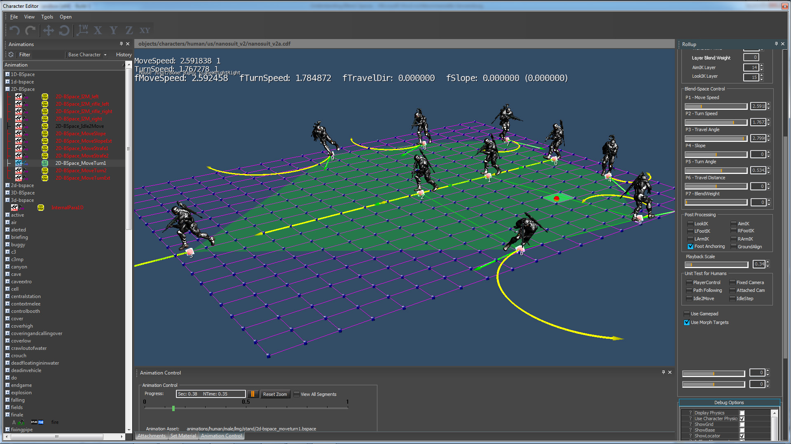
<ParaGroup>
<Dimensions>
<Param name="MoveSpeed" min="+0.2" max="+9.5" cells="19"/>
<Param name="TurnSpeed" min="-3.5" max="+3.5" cells="19"/>
</Dimensions>
<ExampleList>
<Example AName="stand_tac_walk_rifle_fwd_slow_3p_01" /> //move foward
<Example AName="stand_tac_run_rifle_fwd_slow_3p_01" /> //move foward
<Example AName="stand_tac_run_rifle_fwd_fast_3p_01" /> //move foward
<Example AName="stand_tac_sprint_rifle_fwd_3p_01" /> //move foward
<Example AName="stand_tac_walkTurn_rifle_lft_slow_3p_01" /> //turn left
<Example AName="stand_tac_runTurn_rifle_lft_slow_3p_01" /> //turn left
<Example AName="stand_tac_runTurn_rifle_lft_fast_3p_01" /> //turn left
<Example AName="stand_tac_walkTurn_rifle_rgt_slow_3p_01" /> //turn right
<Example AName="stand_tac_runTurn_rifle_rgt_slow_3p_01" /> //turn right
<Example AName="stand_tac_runTurn_rifle_rgt_fast_3p_01" /> //turn right
</ExampleList>
<Blendable>
<Face p0="0" p1="1" p2="5" p3="4" />
<Face p0="0" p1="7" p2="8" p3="1" />
<Face p0="1" p1="2" p2="6" p3="5" />
<Face p0="1" p1="8" p2="9" p3="2" />
<Face p0="2" p1="9" p2="3" />
<Face p0="2" p1="3" p2="6" />
</Blendable>
</ParaGroup> Простой способ сделать это — извлечь «MoveSpeed» и «TurnSpeed» как независимые значения из корневого движения и поместить скорость движения на ось X и скорость поворота на ось Y системы координат. Это обрабатывается следующими строками в файле XML.
<Dimensions>
<Param name="MoveSpeed" min="+0.2" max="+9.5" cells="19"/> //place move-speed automatically on the x-axis
<Param name="TurnSpeed" min="-3.5" max="+3.5" cells="19"/> //place turn-speed automatically on the y-axis
</Dimensions> Связь между параметрами движения и осями координат проста: 1ул. параметр всегда размещается на оси X, 2nd параметр размещается на оси Y, 3р-д параметр переходит на ось z. Мы могли бы использовать «TurnSpeed» в качестве первого параметра в списке, чтобы разместить его по оси X.
Поскольку это 2D-пространство, мы должны аннотировать его гранями. Мы используем треугольники для смешивания трех анимаций и кваты для смешивания между 4 анимациями.
<Blendable>
<Face p0="0" p1="1" p2="5" p3="4" /> //quat
<Face p0="0" p1="7" p2="8" p3="1" /> //quat
<Face p0="1" p1="2" p2="6" p3="5" /> //quat
<Face p0="1" p1="8" p2="9" p3="2" /> //quat
<Face p0="2" p1="9" p2="3" /> //triangle
<Face p0="2" p1="3" p2="6" /> //triangle
</Blendable>Общее правило для 2D-аннотаций: если вы посмотрите с высоты птичьего полета на пространство смешивания в Character Tool, то все аннотации появятся. против часовой стрелки для треугольники и кваты. Треугольники не могут иметь перекрывающихся точек. Кватам не разрешается иметь перекрывающиеся точки или искривленную форму.
Пример: 2D-BSpace_MoveSlope.bspace
Точно так же, как мы делали MoveTurn, мы можем построить и MoveSlope. Когда мы меняем скорость, мы не хотим менять угол наклона, а когда мы меняем медленный угол, это не должно влиять на скорость.
Пример: 2D-BSpace_MoveTurn2.bspace
Предыдущее пространство смешивания имело большую площадь, не покрытую реальными примерами. Если вы переместите курсор в такую область, поведение смешивания не будет определено. Начиная с SDK3.5.2, все типы blend-space поддерживают автоматическую экстраполяцию. (это означает, что система проговаривает ближайшую аннотацию и расширяет ее) но полагаться на него не рекомендуется. Гораздо лучший способ — использовать экстраполированные псевдопримеры, чтобы охватить все пространство.
<ExamplePseudo>
<Pseudo p0="1" p1="0" w0="-1.0" w1="2.0" />
<Pseudo p0="0" p1="4" w0="-2.2" w1="3.2" />
<Pseudo p0="0" p1="7" w0="-2.0" w1="3.0" />
<Pseudo p0="1" p1="5" w0="-0.5" w1="1.5" />
<Pseudo p0="1" p1="8" w0="-0.8" w1="1.8" />
<Pseudo p0="2" p1="6" w0="-0.5" w1="1.5" />
<Pseudo p0="2" p1="9" w0="-0.5" w1="1.5" />
<Pseudo p0="2" p1="3" w0="-2.0" w1="3.0" />
</ExamplePseudo> Это также хороший случай для наблюдения за тем, как работают экстраполированные псевдопримеры. Просто переместите курсор в угол пространства смешивания, т. е. MoveSpeed. 10 м/сек и TurnSpeed 3,14рад/сек. Вы можете видеть, что шаги стали намного шире, а верхняя часть тела раскачивается как сумасшедшая. Это крайне утрированная версия реальных примеров. Такой эффект невозможен в псевдопримере, где вы просто меняете скорость воспроизведения.
Пример: 2D-BSpace_I2M_left.bspace
Также возможно иметь Idle2Moves с разными скоростями. В следующем примере мы можем смешивать walkStart и runStart при переходе к ходьбе или бегу. Этот XML также использует комбинацию реальных примеров и масштабированного примера, чтобы охватить все пространство смешивания. 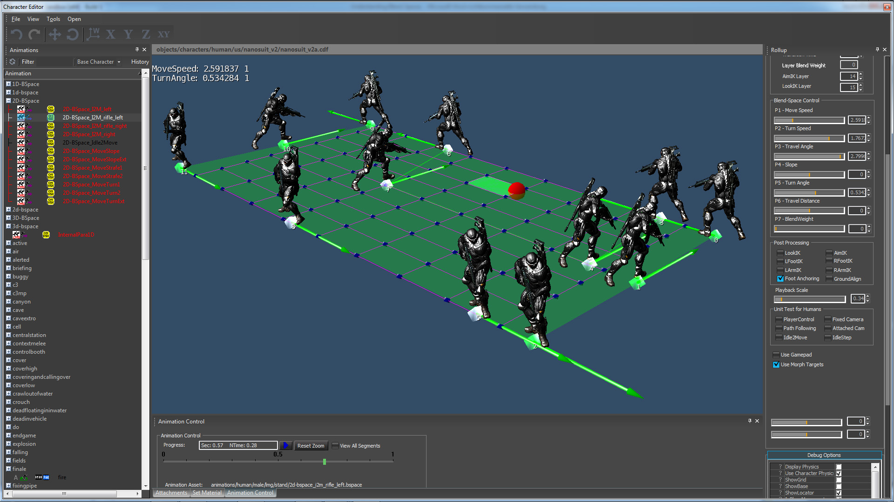
<ParaGroup>
<VEGPARAMS Idle2Move="1" />
<Dimensions>
<Param name="MoveSpeed" min="+.50" max="+6.00" cells="9" JointName="Bip01 Root" skey="0.9" ekey="1.0"/>
<Param name="TurnAngle" min="0.00" max="+3.15" cells="9" JointName="Bip01 Root" skey="0.0" ekey="1.0" locked="1" deltaextraction="1"/>
</Dimensions>
<AdditionalExtraction>
<Param name="TravelAngle" />
</AdditionalExtraction>
<ExampleList>
<Example AName="stand_tac_walkStart_rifle_fwd_slow_lf_3p_01" PlaybackScale="0.15" />
<Example AName="stand_tac_walkStart_rifle_lft_slow_lf_3p_01" PlaybackScale="0.15" />
<Example AName="stand_tac_walkStart_rifle_rev_slow_lf_3p_01" PlaybackScale="0.15" />
<Example AName="stand_tac_walkStart_rifle_fwd_slow_lf_3p_01" PlaybackScale="1.00" />
<Example AName="stand_tac_walkStart_rifle_lft_slow_lf_3p_01" PlaybackScale="1.00" />
<Example AName="stand_tac_walkStart_rifle_rev_slow_lf_3p_01" PlaybackScale="1.00" />
<Example AName="stand_tac_runStart_rifle_fwd_fast_lf_3p_01" PlaybackScale="1.00" />
<Example AName="stand_tac_runStart_rifle_lft_fast_lf_3p_01" PlaybackScale="1.00" />
<Example AName="stand_tac_runStart_rifle_rev_fast_lf_3p_01" PlaybackScale="1.00" />
<Example AName="stand_tac_runStart_rifle_fwd_fast_lf_3p_01" PlaybackScale="1.40" />
<Example AName="stand_tac_runStart_rifle_lft_fast_lf_3p_01" PlaybackScale="1.60" />
<Example AName="stand_tac_runStart_rifle_rev_fast_lf_3p_01" PlaybackScale="1.70" />
</ExampleList>
<Blendable>
<Face p0="1" p1="4" p2="5" p3="2" />
<Face p0="0" p1="3" p2="4" p3="1" />
<Face p0="4" p1="7" p2="8" p3="5" />
<Face p0="3" p1="6" p2="7" p3="4" />
<Face p0="7" p1="10" p2="11" p3="8" />
<Face p0="6" p1="9" p2="10" p3="7" />
</Blendable>
</ParaGroup> Одним из интересных аспектов этого XML является параметр рядом с "MoveSpeed". Анимация двух перемещений в режиме ожидания не имеет постоянной скорости. Это начинается с 0.0f (потому что первая поза — это поза холостого хода) и заканчивается на максимальной скорости. Цель состоит в том, чтобы создать естественный переход в анимацию. (или пространство смешивания) с известной скоростью. С skey="0.9" и ekey="1.0". Мы оцениваем только последние 10% движения корня, которые (если создано правильно) имеет целевую скорость. Параметр JointName="Bip01 Root" — это имя корневого соединения, которое является нашим соединением по умолчанию.
<Dimensions>
<Param name="MoveSpeed" min="+.50" max="+6.00" cells="9" JointName="Bip01 Root" skey="0.9" ekey="1.0"/>
<Param name="TurnAngle" min="0.00" max="+3.15" cells="9" JointName="Bip01 Root" skey="0.0" ekey="1.0" locked="1" deltaextraction="1"/>
</Dimensions> Пример: 2D-BSpace_MoveStrafe1.bspace
Другой пример двумерного пространства смешивания — персонаж, который движется с разной скоростью. (т. е. медленно, быстро, спринт) а также меняет ориентацию своего движения (т.е. вперед/влево/вправо/назад) пока он движется. Когда мы меняем скорость, мы не хотим менять направление движения, а когда мы меняем направление движения, это не должно влиять на скорость.

<ParaGroup>
<Dimensions>
<Param name="MoveSpeed" min="+1.0" max="+4.5" cells="19" />
<Param name="TravelAngle" min="-3.14" max="+3.14" cells="17" />
</Dimensions>
<ExampleList>
<Example AName="stand_tac_walk_rifle_bwd_slow_3p_01" SetPara1="-3.141" />
<Example AName="stand_tac_walkCross_rifle_bRgt_slow_3p_01" />
<Example AName="stand_tac_walkStr_rifle_rgt_slow_3p_01" />
<Example AName="stand_tac_walk_rifle_fwd_slow_3p_01" />
<Example AName="stand_tac_walkCross_rifle_fLft_slow_3p_01" />
<Example AName="stand_tac_walkStr_rifle_lft_slow_3p_01" />
<Example AName="stand_tac_walk_rifle_bwd_slow_3p_01" SetPara1="+3.141" />
<Example AName="stand_tac_run_rifle_bwd_fast_3p_01" SetPara1="-3.141" />
<Example AName="stand_tac_runCross_rifle_bRgt_fast_3p_01" />
<Example AName="stand_tac_runStr_rifle_rgt_fast_3p_01" />
<Example AName="stand_tac_run_rifle_fwd_fast_3p_01" />
<Example AName="stand_tac_runCross_rifle_fLft_fast_3p_01" />
<Example AName="stand_tac_runStr_rifle_lft_fast_3p_01" />
<Example AName="stand_tac_run_rifle_bwd_fast_3p_01" SetPara1="+3.141" />
</ExampleList>
<Blendable>
<Face p0=" 0" p1=" 7" p2=" 8" p3=" 1" />
<Face p0=" 1" p1=" 8" p2=" 9" p3=" 2" />
<Face p0=" 2" p1=" 9" p2="10" p3=" 3" />
<Face p0=" 3" p1="10" p2="11" p3=" 4" />
<Face p0=" 4" p1="11" p2="12" p3=" 5" />
<Face p0=" 5" p1="12" p2="13" p3=" 6" />
</Blendable>
</ParaGroup>Для этого сочетания мы используем 6 направлений ходьбы (= замедленное движение) и 6 направлений бега (= ускоренное движение). Затем мы извлекаем «MoveSpeed» и «TravelAngle» как независимые значения из корневого движения и помещаем скорость движения на ось X и угол перемещения на ось Y системы координат. Это обрабатывается следующими строками в файле XML.
<Dimensions>
<Param name="MoveSpeed" min="+1.0" max="+4.5" cells="19" />
<Param name="TravelAngle" min="-3.14" max="+3.14" cells="17" />
</Dimensions> Пример: 2D-BSpace_MoveStrafe2.bspace
В предыдущем примере со стрейфом у нас были активы ходьбы и бега для разных скоростей. Иногда вам нужны лишь небольшие изменения скорости перемещения, когда визуальная разница в ресурсах настолько мала, что вы не хотите создавать новые активы. В этом примере мы взяли стрейф приседания и использовали PlaybackScale для создания псевдоактивов с различной скоростью движения. Таким образом, каждый актив используется дважды, но с разной скоростью. Поскольку дублированные ресурсы также имеют разные позиции в пространстве, мы можем использовать их для создания двухмерного пространства смешивания. С помощью этого простого трюка мы можем генерировать скорость перемещения между 0,2 м/сек. и 2,5 м/сек. путем масштабирования скорости исходных активов.

<ParaGroup>
<Dimensions>
<Param name="MoveSpeed" min="+0.20" max="+2.50" cells="9" />
<Param name="TravelAngle" min="-3.14" max="+3.14" cells="29" />
</Dimensions>
<ExampleList>
<Example AName="crouch_tac_walk_rifle_bwd_slow_3p_01" SetPara1="-3.147" PlaybackScale="0.15" />
<Example AName="crouch_tac_walkCross_rifle_bRgt_slow_3p_01" PlaybackScale="0.15"/>
<Example AName="crouch_tac_walkStr_rifle_rgt_slow_3p_01" PlaybackScale="0.15" />
<Example AName="crouch_tac_walk_rifle_fwd_slow_3p_01" PlaybackScale="0.15" />
<Example AName="crouch_tac_walkCross_rifle_fLft_slow_3p_01" PlaybackScale="0.15" />
<Example AName="crouch_tac_walkStr_rifle_lft_slow_3p_01" PlaybackScale="0.15" />
<Example AName="crouch_tac_walk_rifle_bwd_slow_3p_01" SetPara1="+3.147" PlaybackScale="0.15" />
<Example AName="crouch_tac_walk_rifle_bwd_slow_3p_01" SetPara1="-3.147" PlaybackScale="4.50" />
<Example AName="crouch_tac_walkCross_rifle_bRgt_slow_3p_01" PlaybackScale="6.00" />
<Example AName="crouch_tac_walkStr_rifle_rgt_slow_3p_01" PlaybackScale="3.50" />
<Example AName="crouch_tac_walk_rifle_fwd_slow_3p_01" PlaybackScale="3.40" />
<Example AName="crouch_tac_walkCross_rifle_fLft_slow_3p_01" PlaybackScale="4.40" />
<Example AName="crouch_tac_walkStr_rifle_lft_slow_3p_01" PlaybackScale="4.40" />
<Example AName="crouch_tac_walk_rifle_bwd_slow_3p_01" SetPara1="+3.147" PlaybackScale="4.40" />
</ExampleList>
<Blendable>
<Face p0="6" p1="5" p2="12" p3="13" />
<Face p0="5" p1="4" p2="11" p3="12" />
<Face p0="4" p1="3" p2="10" p3="11" />
<Face p0="3" p1="2" p2="9" p3="10" />
<Face p0="2" p1="1" p2="8" p3="9" />
<Face p0="1" p1="0" p2="7" p3="8" />
</Blendable>
</ParaGroup>3D-смешивание пространств
Все концепции, которые мы узнали об 1D и 2D, применимы и к 3D-пространствам смешивания. В 3D-пространствах смешивания нет ничего особенного, за исключением того факта, что у нас есть дополнительное измерение.
Единственная проблема, с которой мы сталкиваемся при использовании 3D и более высоких измерений, заключается в том, что их становится сложнее визуализировать и отлаживать.
Пример: 3D-BSpace_MoveTurnSlope.bspace
Одно из приложений для 3d — поставить mсверхскорость на Х, скорость поворота на Y, угол наклона на Z. Вы можете видеть, в каком направлении это происходит: каждый новый параметр управления на самом деле новое измерение в Blend-пространстве. В 3D мы можем управлять движением вверх/вниз и комбинировать это с различными скоростями и углами поворота.

<ParaGroup>
<Dimensions>
<Param name="MoveSpeed" min="+0.2" max="+9.5" cells="7"/>
<Param name="TurnSpeed" min="-3.8" max="+3.8" cells="7"/>
<Param name="TravelSlope" min="-0.5" max="+0.5" scale="4.4" cells="5"/>
</Dimensions>
<ExampleList>
<Example AName="stand_tac_walk_rifle_fwd_slow_3p_01" />
<Example AName="stand_tac_run_rifle_fwd_slow_3p_01" />
<Example AName="stand_tac_run_rifle_fwd_fast_3p_01" />
<Example AName="stand_tac_sprint_rifle_fwd_3p_01" />
<Example AName="stand_tac_walkTurn_rifle_lft_slow_3p_01"/> //turn
<Example AName="stand_tac_runTurn_rifle_lft_slow_3p_01" /> //turn
<Example AName="stand_tac_runTurn_rifle_lft_fast_3p_01" /> //turn
<Example AName="stand_tac_walkTurn_rifle_rgt_slow_3p_01"/> //turn
<Example AName="stand_tac_runTurn_rifle_rgt_slow_3p_01" /> //turn
<Example AName="stand_tac_runTurn_rifle_rgt_fast_3p_01" /> //turn
<Example AName="stand_tac_walkUp_rifle_fwd_slow_3p_01" /> //slope
<Example AName="stand_tac_runUp_rifle_fwd_slow_3p_01" /> //slope
<Example AName="stand_tac_runUp_rifle_fwd_fast_3p_01" /> //slope
<Example AName="stand_tac_walkDown_rifle_fwd_slow_3p_01" /> //slope
<Example AName="stand_tac_runDown_rifle_fwd_slow_3p_01" /> //slope
<Example AName="stand_tac_runDown_rifle_fwd_fast_3p_01" /> //slope
</ExampleList>
<ExamplePseudo>
<Pseudo p0="1" p1="0" w0="-1.0" w1="2.0" />
<Pseudo p0="0" p1="4" w0="-2.0" w1="3.0" />
<Pseudo p0="0" p1="7" w0="-2.0" w1="3.0" />
<Pseudo p0="1" p1="5" w0="-1.0" w1="2.0" />
<Pseudo p0="1" p1="8" w0="-1.0" w1="2.0" />
<Pseudo p0="2" p1="6" w0="-1.0" w1="2.0" />
<Pseudo p0="2" p1="9" w0="-1.0" w1="2.0" />
<Pseudo p0="2" p1="3" w0="-2.0" w1="3.0" />
<Pseudo p0="0" p1="10" w0="-2.0" w1="3.0" />
<Pseudo p0="1" p1="11" w0="-0.8" w1="1.8" />
<Pseudo p0="2" p1="12" w0="-0.8" w1="1.8" />
<Pseudo p0="0" p1="13" w0="-1.6" w1="2.6" />
<Pseudo p0="1" p1="14" w0="-1.6" w1="2.6" />
<Pseudo p0="2" p1="15" w0="-1.8" w1="2.8" />
</ExamplePseudo>
<Blendable>
//volumes facing up
<Face p0="0" p1="17" p2="16" p3="24" /> //tetrahedron
<Face p0="0" p1="16" p2="18" p3="24" /> //tetrahedron
<Face p0="1" p1="19" p2="17" p3="0" p4="25" p5="24"/> //prism
<Face p0="0" p1="18" p2="20" p3="1" p4="24" p5="25"/> //prism
<Face p0="2" p1="21" p2="19" p3="1" p4="26" p5="25"/> //prism
<Face p0="1" p1="20" p2="22" p3="2" p4="25" p5="26"/> //prism
<Face p0="2" p1="23" p2="21" p3="26" />
<Face p0="2" p1="22" p2="23" p3="26" />
//volumes facing down
<Face p2="0" p1="17" p0="16" p3="27" /> //tetrahedron
<Face p2="0" p1="16" p0="18" p3="27" /> //tetrahedron
<Face p3="1" p2="19" p1="17" p0="0" p4="27" p5="28"/> //prism
<Face p3="0" p2="18" p1="20" p0="1" p4="28" p5="27"/> //prism
<Face p3="2" p2="21" p1="19" p0="1" p4="28" p5="29"/> //prism
<Face p3="1" p2="20" p1="22" p0="2" p4="29" p5="28"/> //prism
<Face p2="2" p1="23" p0="21" p3="29" /> //tetrahedron
<Face p2="2" p1="22" p0="23" p3="29" /> //tetrahedron
</Blendable>
</ParaGroup>3D-пространства смешивания выглядят пугающе и запутанно при первом взгляде на них, но с ними можно справиться, если следовать определенной структуре. Базовая настройка для этого аналогична 2D-BSpace_MoveTurn2.bspace. Просто сравните первые 10 записей в <ExampleList> и первые 8 записей в <ExamplePseudo>. Единственная разница в том, что мы также добавили 6 склонов. Для аннотирования трехмерного пространства смешивания мы используем объемы, такие как тетраэдры, пирамиды и призмы.
Каждый объем имеет заземляющую плоскость (3-4 точки) и наконечник (1-2 точки). Если кончик направлен вверх, вершины на базовой плоскости должны быть аннотированы. против часовой стрелки. Если кончик направлен вниз, вершины на базовой плоскости должны быть аннотированы. по часовой стрелке.
Пример: 3D-BSpace_MoveTurnSlope_Combination.comb
3D-пространства смешивания труднее отлаживать, даже при очень структурированном дизайне. К счастью, многие смеси более высоких размерностей представляют собой комбинацию простых смесей более низкой размерности. Эта связь позволяет объединить два 2D-пространства в 3D-пространство и два 3D-пространства в 4D-пространство. Это простые линейные комбинации. Мы хотим показать, как воссоздать предыдущую»3D-BSpace_MoveTurnSlope.bspace" с простой комбинацией 2D-пространств смешивания. Это также хороший пример, демонстрирующий другое применение файла *.COMB.
Мы немного изменили 2D-пространства перехода «MoveSlope» и «MoveTurn». Взгляните на эти файлы:
2D-BSpace_MoveSlopeExt.bspace2D-BSpace_MoveTurnExt.bspace
В примере со склоном мы изменяем область действия, чтобы обеспечить очень большую и почти неестественную экстраполяцию активов склона.
<Dimensions>
<Param name="MoveSpeed" min="+0.2" max="+9.5" cells="17"/>
<Param name="TravelSlope" min="-1.0" max="+1.0" scale="4.4" cells="37"/>
</Dimensions> Мы сделали то же самое в примере с поворотом, где разрешили экстремальное значение скорости поворота.
<Dimensions>
<Param name="MoveSpeed" min="+0.2" max="+9.5" cells="19"/>
<Param name="TurnSpeed" min="-6.30" max="+6.30" cells="39"/>
</Dimensions> Файл "3D-BSpace_MoveTurnSlope_Combination.comb" объединяет оба пространства смешивания, масштабируя параметры "MoveSpeed" и "TurnSpeed" на 2, а затем выполняя смешивание 50%-50% с результатом обоих пространств смешивания. Результатом является новое пространство смешивания, в котором вы можете управлять всеми тремя функциями независимо. Это практический пример того, как линейно комбинировать пространства смешивания и объединять их функции.
<CombinedBlendSpace>
<Dimensions>
<Param name="MoveSpeed" />
<Param name="TurnSpeed" ParaScale="2.0" />
<Param name="TravelSlope" ParaScale="2.0" />
</Dimensions>
<BlendSpaces>
<BlendSpace AName="animations/human/male/lmg/stand/2D-BSpace_MoveSlopeExt.bspace" />
<BlendSpace AName="animations/human/male/lmg/stand/2D-BSpace_MoveTurnExt.bspace" />
</BlendSpaces>
</CombinedBlendSpace>Та же концепция работает и с более высокими измерениями. Для C3 мы взяли два 3D-пространства смешивания и объединили их в 4D-пространство смешивания. Это было просто доказательством того, насколько далеко мы можем продвинуться с помощью алгебры пространства смешивания.
Правила аннотаций
Используя blend-spaces, мы рассматриваем смешивание анимации как геометрическую задачу. Настройка и внутренняя структура пространства смешивания аналогичны модели-сетке с вершинный буфер и индексный буфер: Каждый анимационный клип в ExampleList представляет точку в системе координат. Другими словами, мы связываем каждую анимацию с 1D, 2D или 3D-позицией в пространстве, а список всех примеров представляет собой буфер вершин. Сложнее всего, конечно, скрыть анимацию в определенных позициях в пространстве. В нашем случае позиционирование анимации может происходить либо вручную(с SetParaX=?) или с автоматическое извлечение(что рекомендуется, если вы хотите правильное параметрическое смешивание).
<ExampleList>
<Example AName="stand_tac_walk_rifle_fwd_slow_3p_01" />
<Example AName="stand_tac_run_rifle_fwd_slow_3p_01" />
<Example AName="stand_tac_run_rifle_fwd_fast_3p_01" />
<Example AName="stand_tac_sprint_rifle_fwd_3p_01" />
<Example AName="stand_tac_walkTurn_rifle_lft_slow_3p_01" />
<Example AName="stand_tac_runTurn_rifle_lft_slow_3p_01" />
<Example AName="stand_tac_runTurn_rifle_lft_fast_3p_01" />
<Example AName="stand_tac_walkTurn_rifle_rgt_slow_3p_01" />
<Example AName="stand_tac_runTurn_rifle_rgt_slow_3p_01" />
<Example AName="stand_tac_runTurn_rifle_rgt_fast_3p_01" />
</ExampleList> Эти точки в пространстве соединены индексным списком. Все записи в Blendable являются индексным буфером. Именно так мы определяем (аннотируем), какие активы можно разумно смешивать. Эта аннотация происходит вручную.
<Blendable>
<Face p0="0" p1="1" p2="5" p3="4"/> //quat annotation
<Face p0="0" p1="7" p2="8" p3="1"/> //quat annotation
<Face p0="1" p1="2" p2="6" p3="5"/> //quat annotation
<Face p0="1" p1="8" p2="9" p3="2"/> //quat annotation
<Face p0="2" p1="9" p2="3" /> //triangle annotation
<Face p0="2" p1="3" p2="6" /> //triangle annotation
</Blendable> Этот вид геометрические отношения между анимационными клипами очень полезно для параметрическое смешивание. Поскольку существует так много общего с сетками и рендерингом, должно быть очевидно, что невозможно визуализировать пространство смешивания как древовидную структуру, особенно если вы хотите выполнять многомерные смешения в 2D- и 3D-пространствах.
Вот основные правила аннотирования пространств смешивания:
1D-аннотации
В 1D-смешение пространств все точки лежат на одной линии, поэтому мы используем отрезки линий для аннотаций. Важно, чтобы p0 указывал на меньший параметр, а p1 — на более высокий параметр в примерах. Если порядок обратный или оба параметра идентичны, система остановится с ошибкой.
Также важно следить за тем, чтобы в линии не было пробелов. (отверстия, не закрытые отрезками-линиями) или перекрывающиеся сегменты линий. Это может привести к неопределенному поведению. Во время выполнения мы проверяем, входной параметр находится внутри одного из этих сегментов линий, а затем интерполирует между этими двумя анимациями. В идеальной ситуации входной параметр всегда должен находиться внутри отрезка. Начиная с SDK3.5.2 мы добавили автоматическую экстраполяцию (что вполне предсказуемо для одномерных пространств), но немного медленнее по сравнению с правильно аннотированным пространством.
2D-аннотации
В 2D-смешение пространств все точки лежат на плоскости. Вы смотрите с высоты птичьего полета на пространство смешивания в Character Tool, затем происходят все аннотации. против часовой стрелки для треугольники и кваты.
Важно следить за тем, чтобы в пространстве не было щелей. (отверстия, не закрывающие грань) или перекрывающиеся треугольники и четверти. Это может привести к неопределенному поведению. Во время выполнения мы проверяем, входной параметр находится внутри одного из них треугольники (3 анимации) и кваты (4 анимации), а затем интерполировать между этими анимациями. В идеальной ситуации входной параметр всегда должен находиться внутри грани.
3D-аннотации
В 3D-пространства смешивания у нас есть тетраэдры, пирамиды и призмы. Все они имеют заземляющую плоскость (3-4 точки) и наконечник (1-2 точки). Если кончик направлен вверх, вершины на базовой плоскости должны быть аннотированы. против часовой стрелки.
Если кончик направлен вниз, вершины на базовой плоскости должны быть аннотированы. по часовой стрелке. (В случае тетраэдров это не имеет значения, но для обеспечения согласованности не помешает использовать то же правило.)
Важно следить за тем, чтобы в пространстве не было щелей. (отверстия, не закрытые объемом) или перекрывающиеся тома. Это может привести к неопределенному поведению. Во время выполнения мы проверяем, входной параметр находится внутри одного из этих томов, а затем интерполирует между этими анимациями. В идеальной ситуации входной параметр всегда должен находиться внутри тома.
Рабочий процесс аннотирования пространств смешивания
Мы понимаем, что процесс установки с помощью текстового редактора немного неудобен. Но если вы используете горячая загрузка Если использовать функцию правильно, вы можете сократить этот процесс до 1–5 минут для большинства пространств смешивания.
Если мы создаем новое пространство смешивания, мы используем следующие шаги:
Шаг 1: Сначала мы определяем, какие параметры необходимы, а затем создаем список примеров в файле XML. Минималистичный XML может выглядеть так, как показано ниже. Убедитесь, что в файле нет ничего, кроме <Dimensions> и <ExampleList>.
<ParaGroup>
<Dimensions>
<Param name="MoveSpeed" min="+0.2" max="+9.5" cells="19"/>
<Param name="TurnSpeed" min="-3.5" max="+3.5" cells="19"/>
</Dimensions>
<ExampleList>
<Example AName="stand_tac_walk_rifle_fwd_slow_3p_01" />
<Example AName="stand_tac_run_rifle_fwd_slow_3p_01" />
<Example AName="stand_tac_run_rifle_fwd_fast_3p_01" />
<Example AName="stand_tac_sprint_rifle_fwd_3p_01" />
<Example AName="stand_tac_walkTurn_rifle_lft_slow_3p_01" />
<Example AName="stand_tac_runTurn_rifle_lft_slow_3p_01" />
<Example AName="stand_tac_runTurn_rifle_lft_fast_3p_01" />
<Example AName="stand_tac_walkTurn_rifle_rgt_slow_3p_01" />
<Example AName="stand_tac_runTurn_rifle_rgt_slow_3p_01" />
<Example AName="stand_tac_runTurn_rifle_rgt_fast_3p_01" />
</ExampleList>
</ParaGroup>Шаг 2: Затем мы загружаем этот файл в папку Character Tool. Смешение пока невозможно, но мы уже можем проверить качество каждого отдельного актива. Мы используем ca_DrawVEGInfo 3.5 и проверьте, все ли активы действительны, имеют ли правильный локатор движения, не перекрываются в пространстве, охватывают необходимый диапазон и т. д.
Шаг 3: Затем мы выбираем 3 или 4 ресурса, которые кажутся поддающимися смешиванию, и отмечаем их в текстовом редакторе первым треугольником или четвериком. Мы сохраняем файл, и Character Tool должен немедленно обновить пространство смешивания. Теперь мы используем ползунок в Character Tool и перемещаем курсор внутрь аннотированной грани, чтобы проверить, выглядит ли переход так, как ожидалось. Если смесь выглядит плохо, мы должны проверить, что не так с аннотацией или ресурсами, и отправить их обратно аниматорам.
Шаг 4: Если первая аннотация дает ожидаемые результаты, мы переходим к созданию следующей второй аннотации. После каждой аннотации проверяем качество смешивания. Мы повторяем процесс, пока все клипы не будут аннотированы для смешивания.
Шаг 5: Затем мы проверяем наличие дыр в пространстве и пытаемся найти способы закрыть их псевдоактивами. Если псевдоактивы невозможны, мы должны сказать аниматорам, чтобы они создали новые реальные активы. Если псевдоактивы дают приемлемые результаты, мы оставляем их в пространстве и также аннотируем их. Повторяем процесс, пока не будет покрыто все пространство.
Аддитивная и переопределенная анимация
Как и отдельная анимация, пространства смешивания могут воспроизводиться на любом слое анимации (не ограничиваясь слоем 0).
Пространство смешивания также может содержать аддитивную анимацию или анимацию override, однако смешивать разные типы в одном пространстве смешивания нельзя.
В версиях до CRYENGINE 3.7 BSpaces работают только на слое 0, а аддитивная анимация или override не поддерживается.